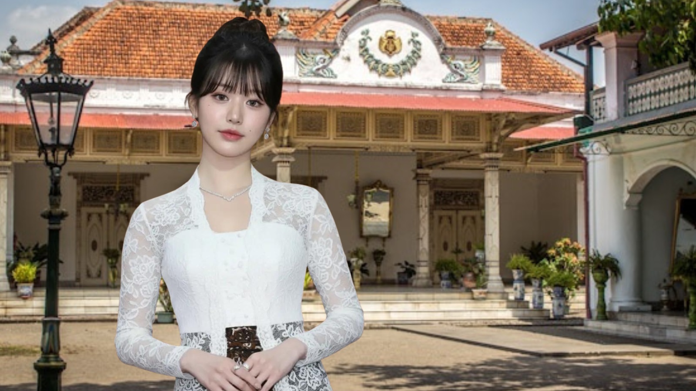

Raden Ajeng Kartini atau yang lebih dikenal dengan R.A. Kartini, adalah salah satu keturunan bangsawan Jawa yang lahir di Jepara pada tanggal 21 April 1879. Sebagai putri dari Bupati Jepara, Raden Mas Adipati Ario Sosroningrat, Kartini memiliki akses terhadap pendidikan yang lebih baik daripada perempuan pribumi pada umumnya di zaman kolonial Belanda. Namun, meskipun lahir dari keluarga priyayi, Kartini tetap merasakan langsung bagaimana sistem feodal dan adat istiadat yang membelenggu kaum perempuan: tidak ada kebebasan untuk belajar setinggi laki-laki, dipingit setelah usia 12 tahun, serta nasib yang sepenuhnya ditentukan oleh orang tua dan suami.
Namun justru dari tembok pembatasan itulah, semangat Kartini berkobar. Ia tidak puas hanya dengan belajar bahasa Belanda secara otodidak, membaca surat kabar, dan berdiskusi dengan teman-teman korespondensinya di Eropa. Kartini memiliki visi besar: perempuan harus memperoleh hak yang setara dalam pendidikan dan kesempatan untuk berkarya. Atas kegigihannya, R.A. Kartini dianggap sebagai salah satu tokoh nasional paling penting di Indonesia, bahkan hingga saat ini diperingati setiap tanggal 21 April sebagai Hari Kartini.
Mengapa Kartini Disebut Tokoh Nasional?

Pengakuan terhadap R.A. Kartini sebagai pahlawan nasional bukan tanpa alasan. Dalam masa kolonial Belanda yang sangat diskriminatif, Kartini berani menyuarakan gagasan tentang persamaan hak antara laki-laki dan perempuan melalui tulisan-tulisan yang kemudian dibukukan dalam "Door Duisternis tot Licht" (Habis Gelap Terbitlah Terang). Gagasan Kartini melampaui zamannya: bahwa bangsa yang maju adalah bangsa yang memberikan ruang seluas-luasnya bagi perempuan untuk mengenyam pendidikan, berpikir kritis, dan ikut membangun peradaban.
Perjuangan Kartini tidaklah mudah. Ia harus berhadapan dengan budaya paternalistik yang sangat kuat, tekanan dari lingkungan keraton, serta pemerintahan kolonial yang hanya memberi akses terbatas pada pribumi. Namun, Kartini tidak gentar. Lewat surat-suratnya yang dikirimkan kepada Stella Zeehandelaar dan sahabat-sahabat Belandanya, ia mengkritik tajam praktik poligami, ketidakadilan gender, dan rendahnya tingkat pendidikan bagi perempuan pribumi.
Kartini tidak sekadar berteori. Ia membuktikan komitmennya dengan mendirikan sekolah perempuan pertama di Indonesia, yang berlokasi di kompleks kantor kabupaten Jepara pada tahun 1903. Sekolah tersebut mengajarkan membaca, menulis, bahasa Belanda, dan keterampilan dasar lainnya—sesuatu yang revolusioner pada masa itu. Setelah Kartini wafat pada usia muda (25 tahun), Yayasan Kartini yang didirikan oleh keluarganya terus melanjutkan perjuangan mendirikan sekolah-sekolah perempuan di Semarang, Surabaya, Yogyakarta, dan daerah lainnya.
Pendidikan: Kunci Kebebasan Perempuan
Dalam setiap surat dan pemikirannya, Kartini selalu menekankan satu hal: pendidikan adalah senjata paling utama bagi kaum perempuan. Tanpa pendidikan, perempuan tidak akan pernah bisa menentukan jalan hidupnya sendiri. Dengan pendidikan, perempuan dapat menjadi mitra sejajar bagi laki-laki dalam membangun rumah tangga, masyarakat, dan bangsa. Kartini bermimpi agar setiap perempuan pribumi bisa duduk di bangku sekolah, bukan hanya untuk menjadi ibu rumah tangga yang baik, tetapi juga sebagai insan terpelajar yang mampu berkontribusi dalam segala bidang kehidupan.
Pemikiran Kartini tentang pendidikan perempuan pada akhirnya menginspirasi lahirnya banyak tokoh pergerakan nasional perempuan, seperti Dewi Sartika, Nyai Ahmad Dahlan, dan Rasuna Said. Mereka meneruskan cita-cita Kartini dengan mendirikan sekolah-sekolih perempuan, organisasi wanita, dan memperjuangkan hak-hak sipil bagi perempuan pribumi. Tanpa pondasi yang diletakkan Kartini, sulit membayangkan bagaimana perempuan Indonesia bisa mencapai posisi seperti sekarang: menjadi presiden, menteri, CEO, ilmuwan, dan profesi lainnya.
Kartini juga menyoroti pentingnya pendidikan yang membebaskan — bukan sekadar transfer ilmu pengetahuan, tetapi juga menanamkan kesadaran kritis akan ketidakadilan. Ia menginginkan perempuan yang berani berpikir, berani bersuara, dan berani mengambil peran di ruang publik. Nilai-nilai inilah yang menjadikan Kartini tidak hanya dikenang sebagai simbol emansipasi, tetapi juga sebagai inspirasi lintas generasi di Indonesia dan dunia.
Warisan Kartini di Era Modern
Lebih dari satu abad setelah wafatnya Kartini, perjuangannya untuk hak pendidikan perempuan telah membuahkan hasil yang nyata. Angka partisipasi pendidikan perempuan di Indonesia terus meningkat, dan saat ini banyak perempuan Indonesia yang menempati posisi-posisi strategis di berbagai sektor. Namun demikian, semangat Kartini tetap relevan karena masih ada berbagai tantangan: kesenjangan akses pendidikan di daerah tertinggal, stereotip gender di dunia kerja, serta kekerasan terhadap perempuan.
R.A. Kartini mengajarkan bahwa perjuangan untuk kesetaraan tidak pernah usai. Ia adalah teladan bahwa meskipun lahir di tengah keterbatasan dan budaya yang mengekang, perempuan dapat melampaui tembok-tembok itu dengan tekad, ilmu, dan cita-cita yang luhur. Warisan Kartini mengingatkan kita semua bahwa memajukan perempuan berarti memajukan seluruh bangsa. "Habis gelap terbitlah terang" — filosofi Kartini terus bersinar, menerangi jalan bagi setiap perempuan Indonesia untuk bermimpi, belajar, dan berkarya tanpa batas.
Kini, setiap tanggal 21 April, bangsa Indonesia memperingati Hari Kartini bukan sekadar dengan mengenakan busana daerah, tetapi dengan merefleksikan kembali nilai-nilai perjuangannya: keberanian melawan ketidakadilan, kecintaan pada ilmu pengetahuan, dan komitmen untuk memberdayakan perempuan. Melalui pemahaman yang mendalam tentang sosok R.A. Kartini, generasi muda dapat meneladani keteguhan hati, kerja keras, dan idealisme yang membawa perubahan nyata bagi masyarakat.
Sebagai keturunan bangsawan yang justru memberontak terhadap kemapanan, Kartini membuktikan bahwa status sosial bukanlah penghalang untuk memperjuangkan kebenaran. Perjuangan gigihnya dalam memperjuangkan hak perempuan dan pendidikan pada masa kolonial Belanda menjadikannya pahlawan nasional yang tidak hanya dihormati di Indonesia, tetapi juga diakui oleh dunia internasional sebagai salah satu pionir gerakan feminis di Asia. R.A. Kartini telah membuka jalan, dan kini tugas kitalah untuk melanjutkan perjuangan tersebut di zaman yang terus berubah.